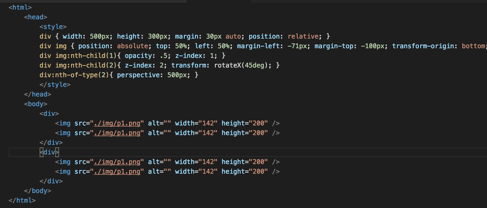

JS Presentation Framework
使用 HTML 创建演示文稿
常见的库
impress.js
reveal.js
spectacle
deck.js等
impress.js
可以做成ppt，但是更是灵活的文字展示框架，支持很多特效，不提供模版机制，作者更鼓励用来实现有趣的点子，可以把效果做的很炫。
The only limit is your imagination ^_^
reveal.js
功能比较全，支持模版，markdown，pdf导出，自动轮播，lazy-loading，按键绑定等特性，而且还能依赖其他js库完成功能。
spectacle
功能也比较全，最大的特点是纯React实现，所有的功能都通过React组件提供。
deck.js
功能相对简单，支持模版，可以用来制作基本功能的PPT，基于jquery实现，非常容易上手。
功能实现
以上几个组件虽然设计思想和代码实现有很大不同，但是在实现展示效果上最终均基于CSS Transitions和Transforms进行变换完成。
Transforms
首先需要了解这个坐标图

rotateX, rotateY, rotateZ
旋转X轴
旋转Y轴
旋转Z轴
perspective
透视，视角
可以简单的理解为视距，用来设置用户和元素3D空间Z平面之间的距离。而其效应由他的值来决定，值越小，用户与3D空间Z平面距离越近，视觉效果更令人印象深刻；反之，值越大，用户与3D空间Z平面距离越远，视觉效果就很小。
实战perspective
观察以下代码：

效果如下
父节点设置了perspective的3d旋转才明显